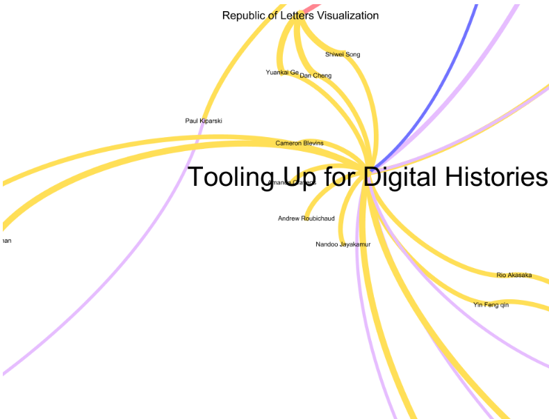
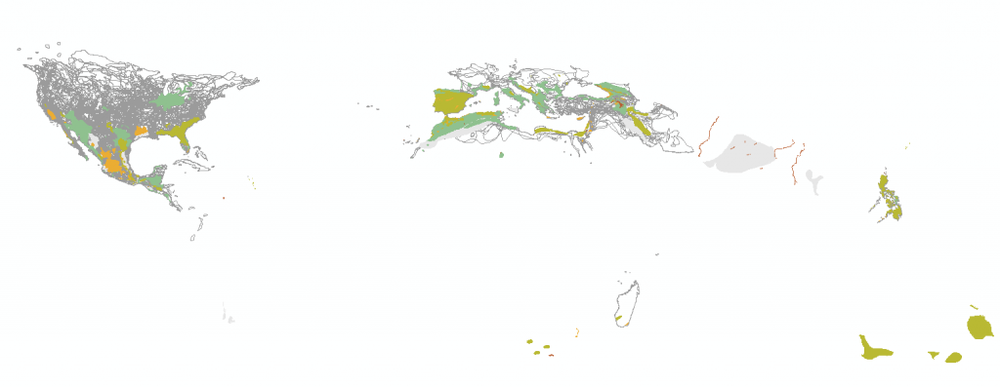
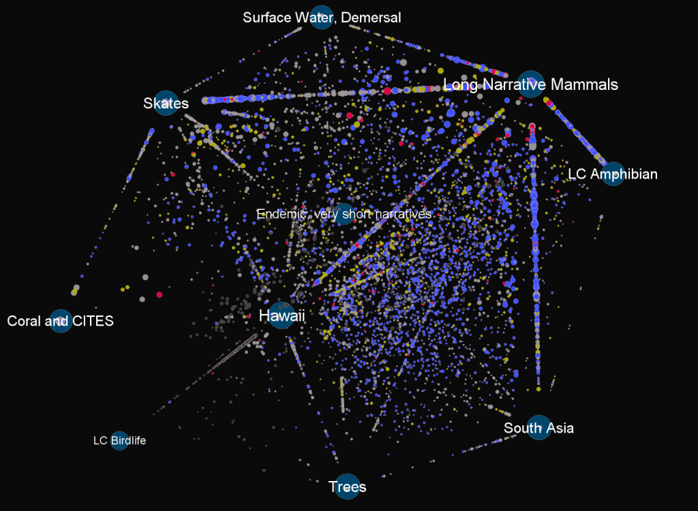

I’ve become quite the fan of Gephi, lately, and received a good-natured challenge by one of my colleagues, which went something like, “Why is a everything a network with you, now?” Obviously, in the case of social network-like phenomena, such as mapping collaboration in the Digital Humanities with the DH@Stanford graph–network theory and network language (whether visual or theoretical) make sense. Network analytical tools like Gephi are also only a short step away from spatial analytical tools, like ArcGIS, many of which are used to ask questions about geographic networks and not about the kind of continuous data found in topography.

Tooling Up for Digital Histories as part of the DH@Stanford graph, which describes collaboration as temporally-aware instances of interconnected social networks at Stanford University.
But more than that, I’ve found the language of networks to mirror the language of data models and that the best way to represent the categorical and relational nature of databases is through tools and visual elements commonly associated with networks. For instance, while I can describe the records found in the IUCN Red List by describing the geographic coverage of the spatial data held in their geodatabase, it relies on data that has been translated into spatial objects, and loses the many gazetteer-like points of data that exist within the categorical and narrative elements of the full IUCN database.


The IUCN Red List spatial data for reptiles. While there are obvious gaps in the coverage, many more species have their ranges described in the full entry.
While the spatial data can reveal trends, it is like any such analysis constrained by an evidenciary layer that, as is made obvious by the above image, can call into question any claim that the trend is about more than data collection and aggregation. I can tell very little about the global spatial characteristics of reptiles based on the IUCN Red List data, beyond its obvious trend toward data collection along the 35th parallel north. I could batch geocode the named place elements within the entries, but the results stand the possibility of making the geographic display of such data even more inaccurate due to complications such as a lack of controlled vocabulary.


Species trends (declining, stable or increasing) clustered around thematic elements derived from the aggregated entries.
Conversely, by representing the data elements of the IUCN Red List using network visualization, I can more accurately examine the data structure, its design and population. The above image is derived by processing the raw data elements within the Red List and then clustering the species toward the themes drawn from each element. The importance of Hawaii, South Asia or Skates should be ignored, this was only a very early draft to explore the usefulness of topic modeling as currently performed in literary studies.

Top Contributors to the Catalogue of Life and their associated species, references and databases
While it could be argued that all databases can be devolved into graph databases, and as such all databases are graphs and therefore networks in the most pure sense, I think that there’s something more practical at play here: the importance of network visualization for database aesthetics. Summaries and statistics drawn from within the structure of the database are not enough. If there is to be any real grappling with the database as an culturally-embedded construct, then it has to be done in a manner that reveals the data, the model and the population simultaneously.